8 Comparing chess players across the board
“A strong memory, concentration, imagination, and a strong will is required to become a great chess player.”
Background FIDE (the International Chess Federation) has used an Elo system since 1970 to rate the relative strengths of chess players based on the results of all official individual games.
Questions What is the distribution of ratings? How does rating change with age? How do the ratings of men and women compare? Which countries have the players with the highest ratings?
Sources FIDE (the International Chess Federation) publishes rating lists of players every month (FIDE (2020)). Country population data for 2019 was taken from the World Bank website (Worldbank (2020)).
Structure The FIDE dataset for December 2020 includes 362502 players with their name, country, rating, and year of birth.
8.1 FIDE ratings of chess players
FIDE (the International Chess Federation) publishes ratings of chess players regularly and these are the ratings that will be discussed here. Like many sporting organisations they use a system based on Elo’s ideas (Elo (1978)). The main assumption is that the performance of a player is normally distributed the player’s current strength. A further assumption is that players’ performances in a game are independent of one another. Ratings are updated based on game results. Ratings in the December 2020 dataset range from 1001 to 2862 (the then world champion, Magnus Carlsen).
Figure 8.1 gives one view of the distribution of player ratings.
Code
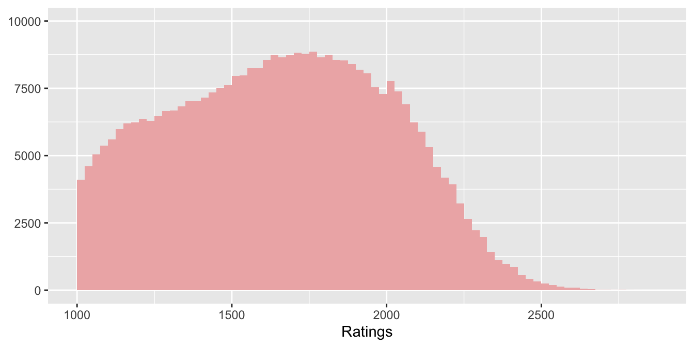
Figure 8.1: Histogram of ratings of all chess players rated by FIDE in December 2020
There is certainly no sign of a normal distribution, but then that would not be expected. There is a sharp lower boundary, presumably because lower ratings are not included. The very best players are not visible, as the histogram bars where they would appear are too small. There is a suggestion of a one-sided peak at 2000. Perhaps players who reach this level stop playing to avoid the risk of falling below 2000. Making the binwidth of the chess ratings histogram narrower (10 rating points instead of the 25 points used in Figure 8.1), there are weak hints of one-sided peaks at 1250 and 1500, similar to the one at 2000.
The best performing players are of interest and they are not visible in Figure 8.1. A boxplot of the ratings data is shown in Figure 8.2 and now the best players stand out (individual outliers drawn in red). It is clear that there were some exceptional players with ratings over 2750. Going back to the data shows that there were 18 of them.
Code
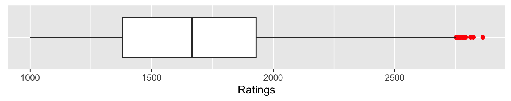
Figure 8.2: Boxplot of ratings of all FIDE rated chess players in December 2020
8.2 Comparing chess players by age and sex
Further information in the dataset includes the sex of the players, their year of birth, and whether they are “active” or not. An inactive player is one who has not played a rated game in the past 12 months (temporarily extended by FIDE to 24 months because of Covid). Gary Kasparov, the former world champion, retired in 2005 and has kept his then rating of 2812. He is recorded as inactive. Comparing the distributions of the active and inactive players gives Figure 8.3. The one-sided peak at 2000 is pretty much all due to the inactive players, as suspected.
Code
Chess2020 <- Chess2020 %>% mutate(Byear=as.numeric(Bday))
Chess2020 <- Chess2020 %>% mutate(Byear=ifelse(Byear>0, Byear, NA))
Chess2020 <- Chess2020 %>% mutate(NoAge=ifelse(is.na(Byear), "No age", "Age"))
Chess2020 <- Chess2020 %>% mutate(Age=2020-Byear)
Chess2020 <- Chess2020 %>% mutate(inactive=ifelse(Flag %in% c("i", "wi"), "inactive", "active"))
Chess2020 <- Chess2020 %>% mutate(AgeX=ifelse(Age < 110, Age, NA))
Chess2020A <- Chess2020 %>% filter(!(Flag %in% c("i", "wi")))
actInact <- ggplot(Chess2020, aes(DEC20)) + geom_histogram(binwidth=10, boundary=0, aes(fill=inactive)) + facet_wrap(vars(inactive)) + xlab("Ratings") + ylab(NULL) + ylim(0,2000) + scale_fill_manual(values=c("royalblue1", "darkgrey")) + guides(fill="none")
actInact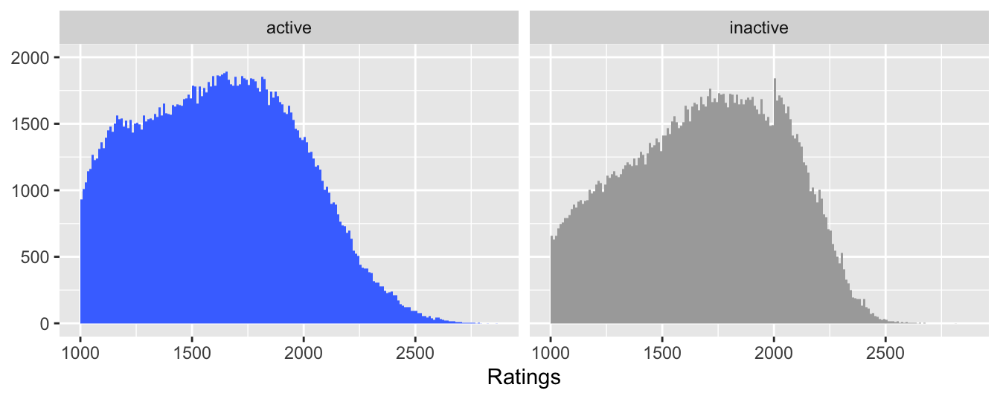
Figure 8.3: Histograms of ratings for active and inactive players
There are relatively fewer inactive players with low ratings. This can be better seen by superposing density estimates for the two groups, as in Figure 8.4.
Code
eloD <- ggplot(Chess2020, aes(DEC20, group=fct_rev(inactive))) + geom_density(aes(colour=inactive), key_glyph = draw_key_smooth, linewidth=2) + theme(legend.position="bottom", axis.text.y=element_blank(), axis.ticks.y=element_blank()) + labs(colour="", y=NULL, x="Ratings") + coord_cartesian(ylim = c(0, 0.0012)) + scale_colour_manual(values=c("royalblue1", "darkgrey"))
eloD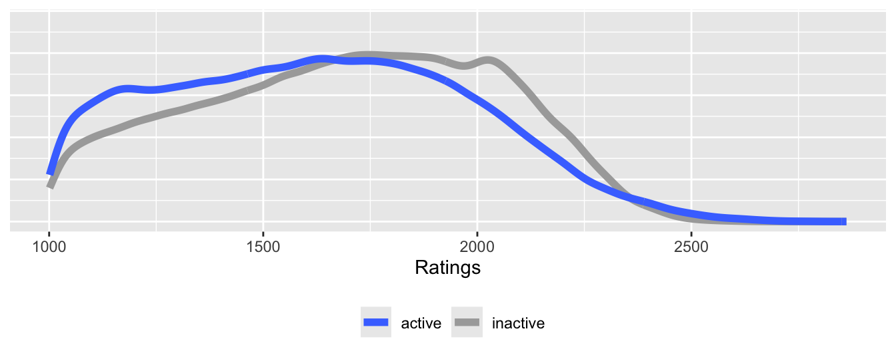
Figure 8.4: Density estimates of distributions of ratings for active and inactive players
Many players take up the game when they are young and do not have high ratings initially. Chess is an extremely strenuous activity at higher levels and there are many reasons why players may stop playing as they get older. The year of birth for a little under 98% of the players is given in the dataset. Plotting density estimates of the distributions of the players’ ages for the inactive and active groups gives Figure 8.5. There is a high proportion of active players who are young, peaking in the early teens.
Code
ggplot(Chess2020, aes(Age, group=fct_rev(inactive))) + geom_density(aes(colour=inactive), key_glyph = draw_key_smooth, linewidth=2) + theme(legend.position="bottom", axis.text.y=element_blank(), axis.ticks.y=element_blank()) + labs(colour="", y=NULL, x="Age") + scale_colour_manual(values=c("royalblue1", "darkgrey")) + scale_x_continuous(breaks=seq(5,95,10))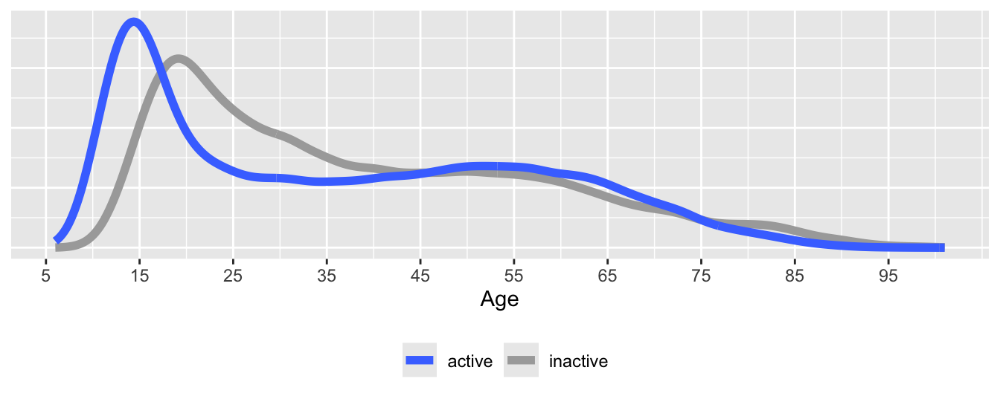
Figure 8.5: Density estimates of age distributions for active and inactive players
Far fewer women play chess than men. In December 2020 women comprised 10.5% of players with a rating. This dropped to 10.1% amongst active players. Figure 8.6 compares the rating distributions for active male and female players.
Code
Chess2020A <- Chess2020A %>% mutate(sex=factor(Sex, levels=c("M", "F"), labels=c("Male", "Female")))
ggplot(Chess2020A, aes(sex, DEC20)) + geom_boxplot(aes(colour=sex, fill=sex), outlier.colour="red", outlier.shape=20, alpha=0.5, varwidth=TRUE) + coord_flip() + ylab("Rating") + xlab(NULL) + scale_x_discrete(labels=c("M" = "Male", "F" = "Female")) + theme(legend.position="none") + scale_colour_manual(values=c("springgreen3", "purple2")) + scale_fill_manual(values=c("springgreen3", "purple2"))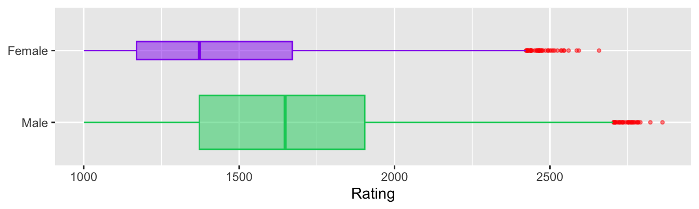
Figure 8.6: Boxplots of ratings for active players by sex (boxplot widths are proportional to the square roots of the sizes of the groups and outliers are drawn in red)
The female ratings are lower than the male ratings, mainly because far fewer females play. This was analysed in Bilalic et al. (2009) using only German ratings from 2008. The authors concluded that the difference in numbers playing explained about 96% of the rating differences between the sexes for the top 100 players of each sex.
Figure 8.7 shows the data for the December 2020 FIDE ratings for the top 1000 active players of each sex. The male ratings are higher. At the very top the differences are smaller and then they get steadily bigger.
Code
np <- 1000
zChess1000 <- Chess2020A %>% group_by(sex) %>% slice_max(DEC20, n=np) %>% slice_head(n=np) %>% mutate(ordID=1:np)
zChess1000w <- zChess1000 %>% select(ordID, sex, DEC20) %>% pivot_wider(names_from=sex, values_from=DEC20)
ggplot(zChess1000, aes(ordID, DEC20, group=sex)) + geom_line(aes(colour=sex, linewidth=Sex)) + xlab(NULL) + ylab(NULL) + theme(legend.position="none") + ylim(0,3000) + scale_size_manual(values = c(0.5, 4.5)) + scale_colour_manual(values=c("springgreen3", "purple2"))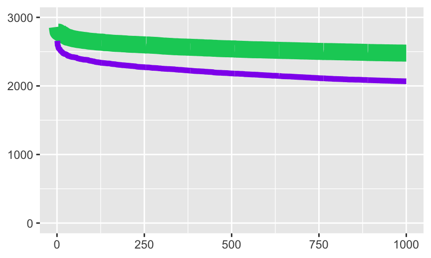
Figure 8.7: Ratings of the top 1000 male and top 1000 female players in December 2020 with line widths proportional to group sizes
The increasing differences can be seen directly in Figure 8.8. This agrees with what Bilalic et al. (2009) found with their data and also with the theoretical expected values they calculated assuming underlying normal distributions of ratings. The FIDE ratings are not normally distributed, but the increasing differences between male and female ratings at these top levels is likely to be true in general for order statistics for groups of such different sizes.
Code
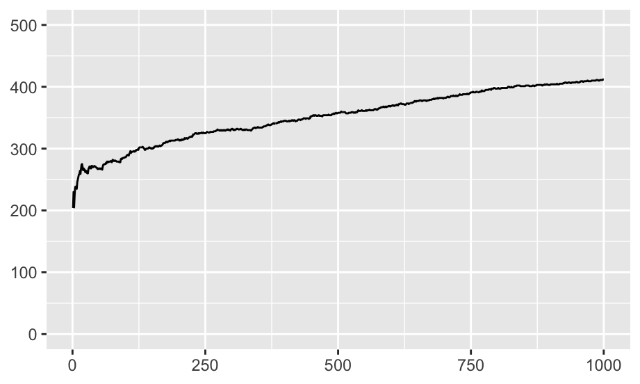
Figure 8.8: Differences between the ratings of the top 1000 male and top 1000 female players in December 2020
Code
ggplot(Chess2020A %>% filter(!is.na(AgeX)), aes(Age, group=sex)) + geom_density(aes(colour=sex, linewidth=Sex)) + xlab("Age") + ylab(NULL) + scale_size_manual(values = c(0.5, 4.5)) + theme(legend.position="none", axis.text.y=element_blank(), axis.ticks.y=element_blank()) + scale_x_continuous(breaks=seq(5,95,10)) + scale_colour_manual(values=c("springgreen3", "purple2"))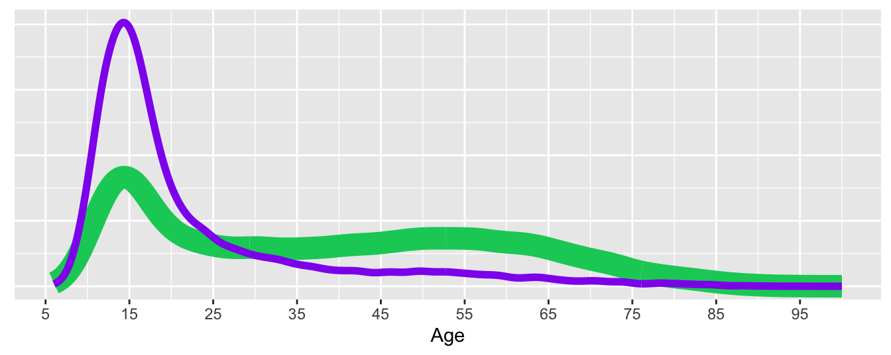
Figure 8.9: Density estimates of age distributions of active players (females in purple, line widths proportional to group sizes)
Age also has an effect as Figure 8.9 suggests. Many teenagers of both sexes play, but the proportion of the young amongst female chess players is much higher than the proportion of the young amongst male chess players. Many young players will give up the game before reaching their full potential. Overall there are about nine times as many male players as female players. Looking at the data in another way, Figure 8.10 shows the absolute numbers of active players by age and sex in December 2020.
Code
sexAgePP <- ggplot(Chess2020A %>% filter(!is.na(AgeX)), aes(Age)) + geom_histogram(aes(fill=sex), breaks=seq(5,95)) + xlab("Age") + ylab(NULL) + theme(legend.position="none") + scale_x_continuous(breaks=seq(5,95,10)) + facet_grid(cols=vars(sex)) + scale_fill_manual(values=c("springgreen3", "purple2"))
sexAgePP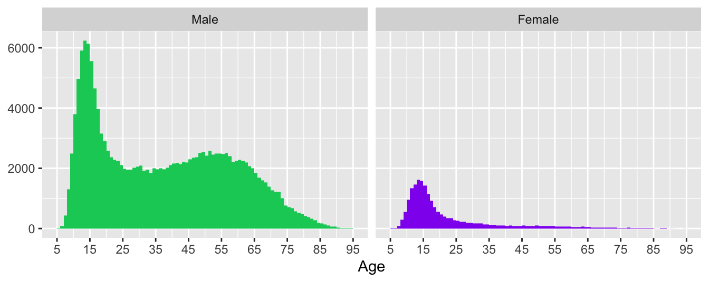
Figure 8.10: Age distributions of active players (females in purple)
The much higher number of male players is obvious, as is the sharp decline in participation by both sexes. What is also clear is that far more older men are still playing. What is not clear is whether the distributional shape is due to there being many more young female players now than there were in the past.
8.3 Which nations have the best chess players?
For much of the twentieth century, the USSR was the strongest chess nation. Over the last thirty years the game has become popular in other nations and it is surprising, which were the largest chess playing nations in December 2020, measured by the number of active rated players. Figure 8.11 shows the 30 chess federations with the highest numbers. The rest are combined into the group ‘Other’. Countries are coloured by region, using the classification and colours of the World Bank does (Worldbank (2020)).
Code
data(ChessCountries)
cols <- c(rgb(224, 148, 92, maxColorValue = 255), rgb(209, 65, 106, maxColorValue = 255), rgb(92, 160, 93, maxColorValue = 255), rgb(149, 99, 152, maxColorValue = 255), rgb(116, 116, 117, maxColorValue = 255), rgb(75, 142, 187, maxColorValue = 255), rgb(249, 207, 84, maxColorValue = 255))
ChCtry <- ggplot(ChessCountries, aes(C1a, weight=fT)) + geom_bar(aes(fill=Region)) + xlab(NULL) + ylab(NULL) + theme(legend.title=element_blank()) + scale_fill_manual(values=cols)
ChCtry1 <- ChCtry + coord_flip()
ChCtry1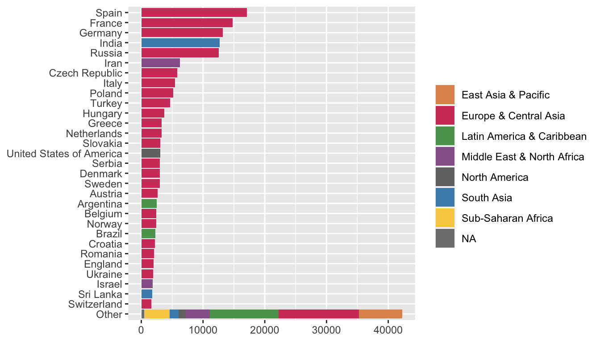
Figure 8.11: Numbers of active rated players by country
Code
Not only is Russia not the country with the most active rated players, there are four other countries with more: Spain, France, Germany, and India. The increased popularity of chess in India is surely due to Anand being undisputed World Chess Champion from 2007 to 2013. The United States is only 15th in the list and most of the top 30 countries are European. Iran stands out in 6th position. The fact that the ‘Other’ group is so large underlines the spread of the game across the world.
Countries are of very different population sizes and other ways of looking at chess-playing strength include the number of active rated players per million population and the number of active grandmasters per million population. These statistics tend to pick out countries with small populations. Instead we can look at how the number of Grandmasters is related to the number of players. Figure 8.12 plots both with bubbles drawn for each country proportional to their population sizes. Only countries with a population of at least one million are included. Russia is the country at the top with far more Grandmasters than any other. The other four countries to the right are India (large in blue), Germany, France, and Spain. China and the USA are the big countries to the left with many grandmasters and relatively few rated players.
Code
ChessCountries <- ChessCountries %>% filter(!(Population=="NaN"))
ggplot(ChessCountries %>% filter(Population > 1000000), aes(fT, GM)) + geom_point(aes(size=Population, colour=Region)) + theme(legend.title=element_blank(), legend.position="bottom", axis.title.y = element_text(angle = 0)) + scale_colour_manual(values=cols) + xlab("Active rated players") + ylab("GM's ") + guides(size="none", colour=guide_legend(nrow=2)) + scale_size_area(max_size=15)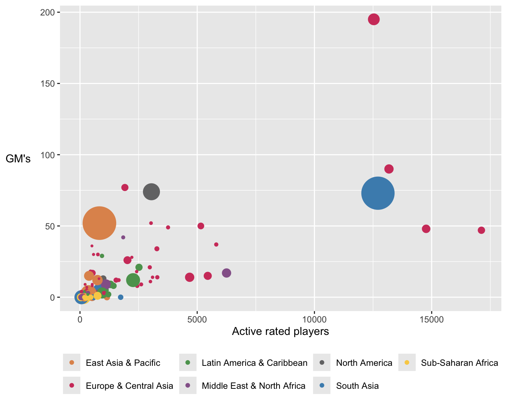
Figure 8.12: Grandmasters and active rated players per million population, where circle areas are proportional to country population sizes
Another approach is to look at rating distributions for individual countries. Figure 8.13 shows boxplots of ratings for all countries with more than 3000 active players ordered by their medians. Boxplot widths have been drawn related to numbers of players and the countries coloured again by region.
Code
chC <- left_join(Chess2020A, ChessCountries, by=c("Fed"="Fed1"))
zChessAF3 <- chC %>% group_by(Fed) %>% mutate(fT=n()) %>% ungroup() %>% filter(fT > 3000) %>% mutate(Fed1=fct_reorder(Fed, fT)) %>% mutate(Fed2=fct_reorder(Fed, DEC20, median))
ggplot(zChessAF3, aes(Fed2, DEC20)) + geom_boxplot(varwidth=TRUE, outlier.colour="red", aes(fill=Region)) + ylab(NULL) + xlab(NULL) + theme(legend.position="none") + scale_fill_manual(values=cols[c(2,4,5,6)])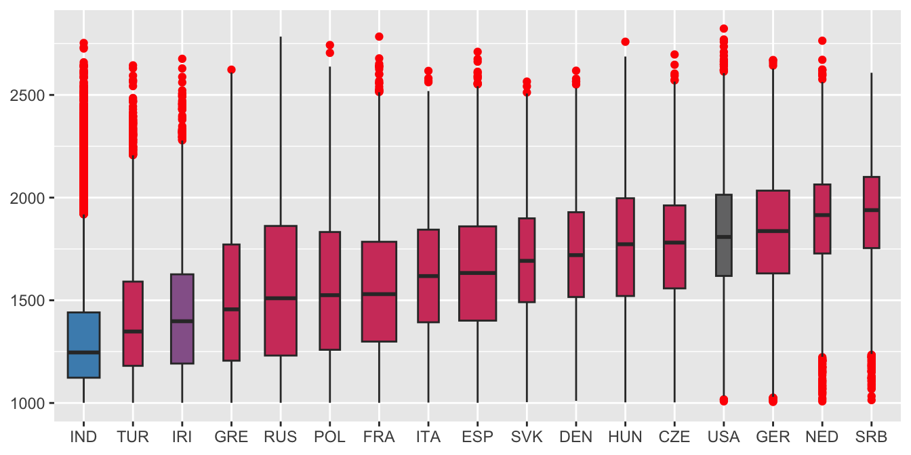
Figure 8.13: Chess ratings of active players for countries with over 3000 active
Serbia and the Netherlands have the highest median values and also some low outliers implying they have fewer players with low ratings. Perhaps different countries have different policies concerning registering players with official ratings. As in Figure 8.11, you can see that Spain, France, Germany, India, and Russia have the most active players and the German players look stronger in general. India has many players, but is the weakest of the big nations, possibly because chess has developed in popularity only recently there. The US has the highest rated player in this display, even though they are one of the smaller countries in terms of the number of active registered players. Norway, the home of the World’s top player, Magnus Carlsen, does not have enough registered players to appear in this chart.
8.4 Ratings change over time
FIDE’s website used to offer datasets going back to January 2001. Currently it offers almost 8 years of monthly ratings datasets and also ratings charts for individual players going back 20 years. The ratings in December 2020 were unusual because tournaments had not taken place due to the Covid pandemic. The December 2015 ratings were chosen for comparison.
The January 2001 dataset only includes players with a rating of over 2000 and has just 36979 players, slightly over a tenth of the number for December 2020. The December 2015 list has no rating restriction, but only 227960 players, so there were about 59% more at the end of 2020, five years later. The proportion of players flagged as inactive has also gone up from 42% to 47% and that explains part of the difference in overall numbers.
Figure 8.14 compares the densities of the rating distributions of active players in December 2015 and December 2020. The difference in the distributions is striking and it might be that there was a higher proportion of young active players in 2020.
Code
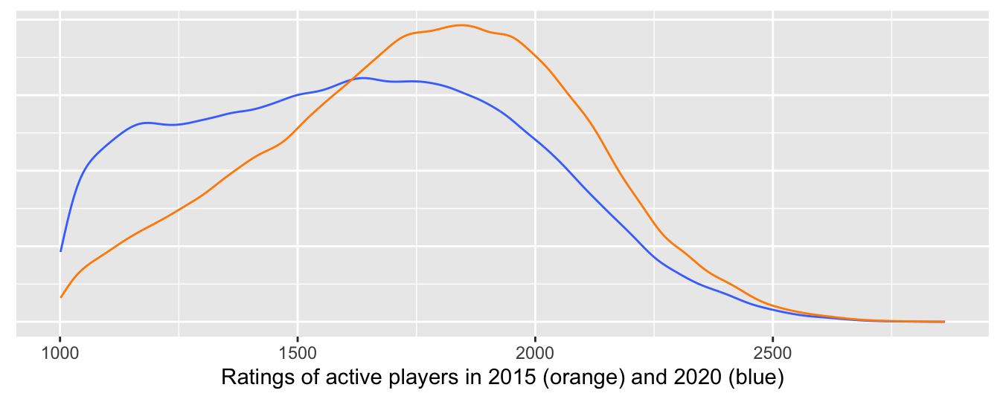
Figure 8.14: Density estimates of distributions of ratings in December 2015 and December 2020
Figure 8.15 compares density estimates of players’ ages and confirms that there was a higher proportion of younger active players in 2020.
Code
ggplot(Chess2020A, aes(Age)) + geom_density(colour="royalblue1") + geom_density(data=Chess2015A, aes(AgeX+1), colour="darkorange") + theme(axis.text.y=element_blank(), axis.ticks.y=element_blank()) + labs(y=NULL, x="Ages of active players in 2015 (orange) and 2020 (blue)") + scale_x_continuous(breaks=seq(5,95,10))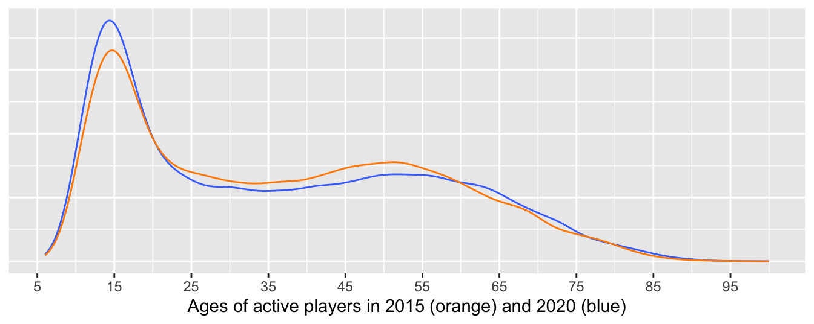
Figure 8.15: Density estimates of active players’ ages in 2015 and 2020
Ratings can be plotted against age in a scatterplot to study how they depend on age. Usually statisticians want more data than they have, so that they can study their data in greater depth. With the chess ratings there is almost too much data! Figure 8.16 illustrates the problem for the December 2015 data. 132489 points have been plotted and there are many overlapping points. An alpha value of 0.05 means that only locations where there are 20 or more points are completely black. This alpha value is too high where there is a lot of data (the very young) and too low where there is little data (the top rated players). Nevertheless we can see that there are no very young high-rated players and that there are relatively few low-rated players aged over 20 or so. There is a decline in the numbers of the very top-rated players with increasing age.
Code
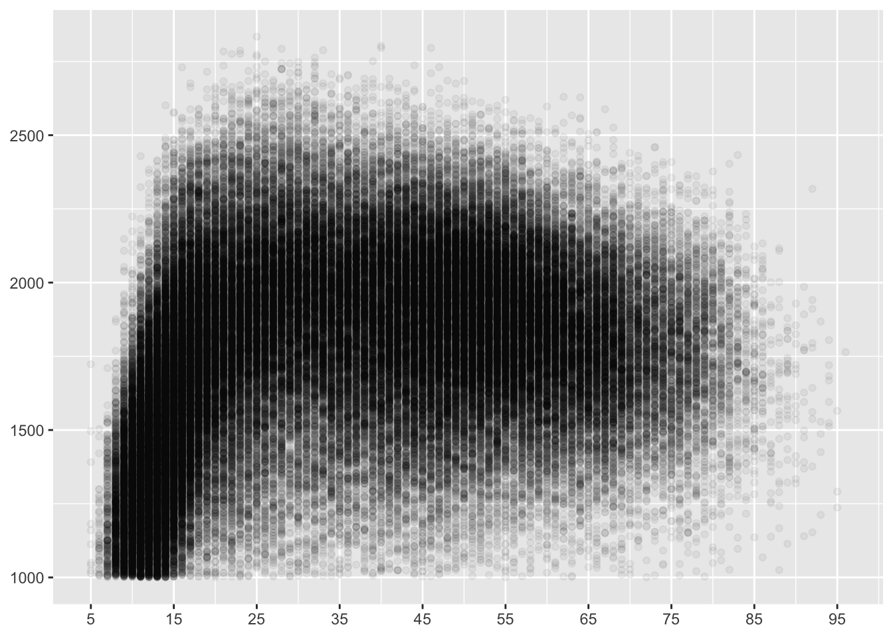
Figure 8.16: Rating by age for active players in 2015 (an alpha value of 0.05 has been used)
The bulk of the players form a shape like a short-necked bird with a long head, perhaps a brent goose. The discreteness of the age data is noticeable due to the striping effect of the gaps. It would not arise with exact ages. The points could be made bigger, but then there would just be one big black blob.
One approach would be a form of two-dimensional density estimation or hexagonal binning (Carr et al. (1987)), possibly including jittering of the age values. Since the dataset is a December one it can be safely assumed that almost all players are at least the calculated age, so that if jittering is carried out it should be by adding a jitter term from [0,1).
A way to both show the densest parts of the data and pick out the top-rated players would be to colour the points for those top players and use different alpha values for the two groups. Figure 8.17 uses an alpha of 0.01 for most of the data and an alpha of 1 for the 44 players coloured red with ratings over 2700.
Code
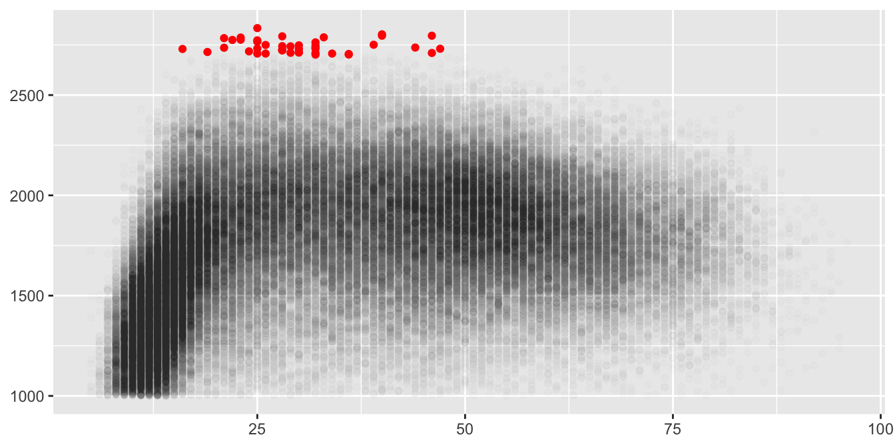
Figure 8.17: Rating by age for active players in 2015 (players with ratings over 2700 are coloured red and an alpha value of 0.01 has been used for the others)
Simplest would be to take a random sample and this has been done in Figure 8.18 using a 10% sample and alpha=0.1. The advantage of sampling from a large dataset is that even a much smaller sample than this 10% one would give an excellent estimate of the overall structure and it is not necessary to draw so many points for that purpose. To be on the safe side a second or even a third sample could be taken to check any results. The disadvantage is that anything rare, such as outliers or unusual cases, may not be included in the samples.
Code
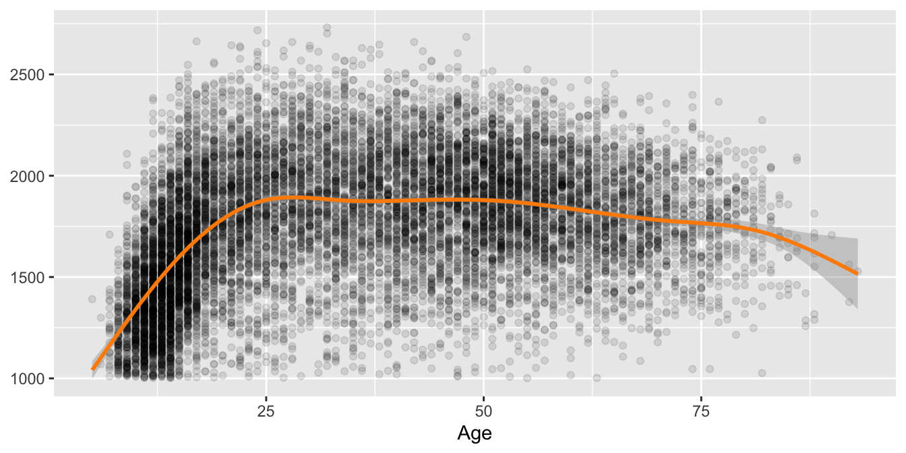
Figure 8.18: Rating by age for a 10% sample of active players in 2015 with a nonlinear smooth and confidence band
Another alternative, using the enforced discreteness of the age variable, would be to draw boxplots for each age (Figure 8.19).\index{boxplot The 38 players over 90 have been excluded as have the 2889 players whose year of birth is not known. The medians of the boxplots show the same pattern as the smooth in Figure 8.18, as do the upper and lower hinges of the boxplots, and the display gives a clear picture of where the middle 50% of the data lie at each age. The upper outliers are players who are exceptional for their age and the lower outliers are players who still compete although they are weak. The first lower outlier appears at age 23, perhaps an indication that many weaker players have given up by then.
Code
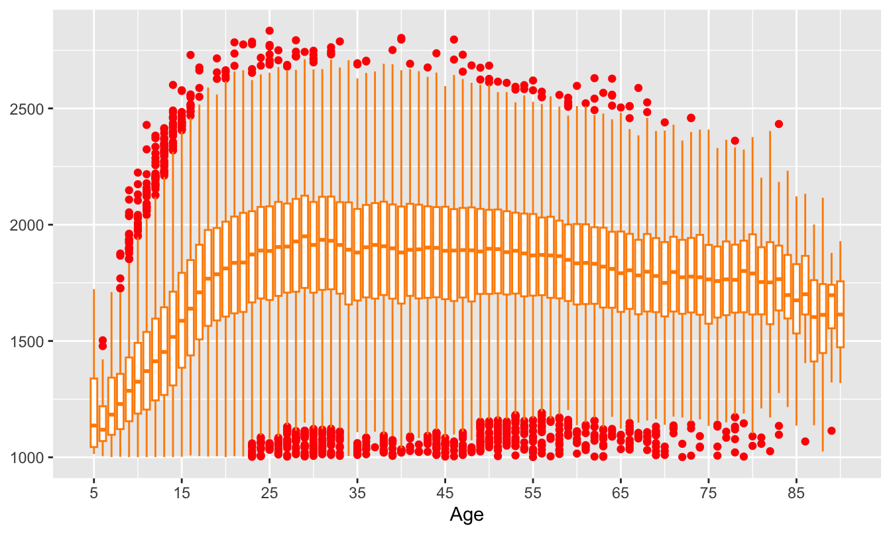
Figure 8.19: Boxplots of ratings by age for active players in 2015
The disadvantage of using boxplots is that they cannot show multimodality, if it exists. To check for multimodality, consider ridge plots, as in Figure 8.20. Most of the ridges look close to unimodal, symmetric distributions. Ridges have only been drawn here for ages at every 5 years for the main part of the dataset from ages 15 to 65. While ridges are good for the central bulk of distributions they are not so good at the extremes where they may imply higher or lower values than are reasonable. As no players can have ratings less than 1000, an option has been chosen to set a boundary there. Similarly, the upper tails of the distributions have been bounded. Using ridgeplots and boxplots in combination is a promising solution.
Code
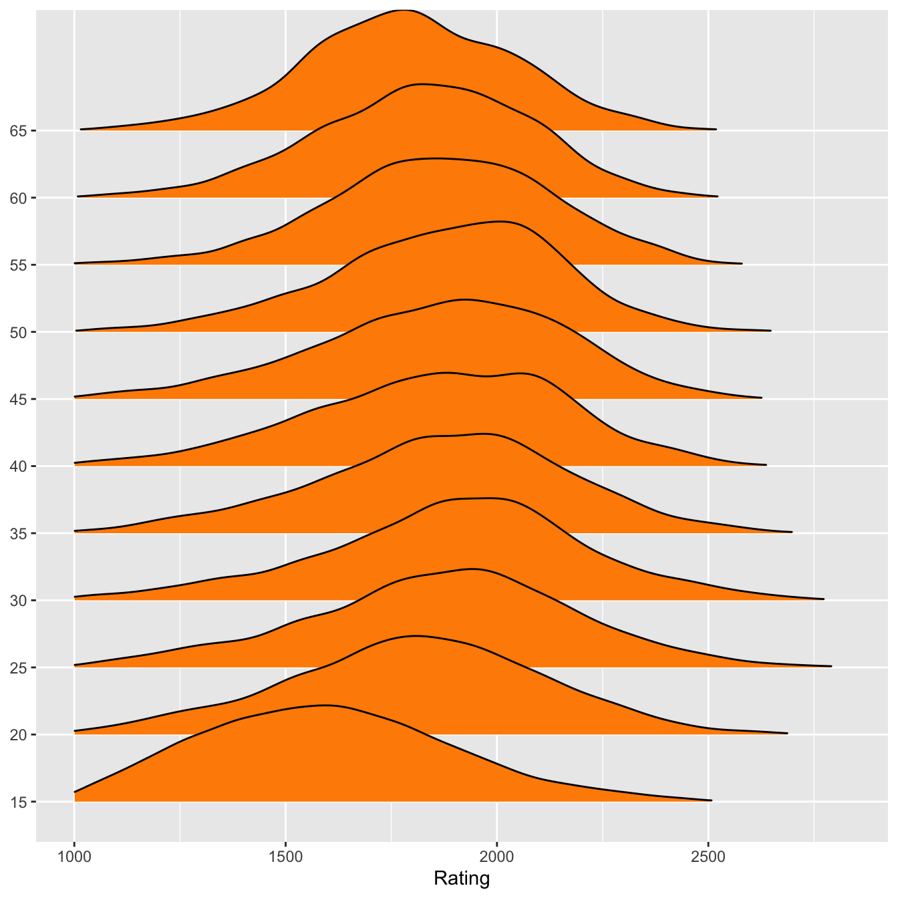
Figure 8.20: Ridgeplots of ratings for active players in 2015 for ages from 15 to 65 in 5 year jumps
Returning to comparing the rating datasets in December 2015 and 2020, Figure 8.21 shows two scatterplots of rating by age, one for the active players in the December 2015 dataset and one for the active players in the December 2020 dataset. Smooths have been drawn to show how rating varies with age.
Code
ar1 <- ggplot(Chess2015A, aes(AgeX, DEC15)) + geom_point(alpha=0.01) + geom_smooth(colour="darkorange") + labs(y=NULL, x=NULL) + scale_x_continuous(breaks=seq(5,95,10))
ar2 <- ggplot(Chess2020A, aes(Age, DEC20)) + geom_point(alpha=0.01) + geom_smooth(colour="royalblue1") + labs(y=NULL, x=NULL) + scale_x_continuous(breaks=seq(5,95,10))
ar1+ar2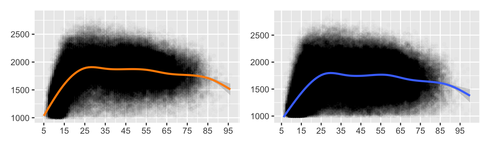
Figure 8.21: Rating by age for active players in 2015 and 2020
The scatterplots look fairly similar in form. A direct comparison of the smooths is shown in Figure 8.22.
Code
ags1520 <- ggplot(Chess2015A, aes(AgeX, DEC15)) + geom_smooth(colour="darkorange") + geom_smooth(data=Chess2020A, aes(Age, DEC20), colour="royalblue1") + labs(y=NULL, x="Ratings by age for 2015 (orange) and 2020 (blue)") + coord_cartesian(ylim = c(1000, 2800)) + scale_x_continuous(breaks=seq(5,95,10))
ags1520
Figure 8.22: Smooths for ratings by age for active players in 2015 and 2020
Smoothed ratings by age for active players were uniformly lower in 2020 than in 2015. This is likely because there were many more active players in 2020 than in 2015. It is curious that the smooth for 2020 starts at a higher age than the one for 2015. Exploring the data showed that there were fewer very young rated players in 2020. The data reveal that there were 0 five-year-olds in the 2020 dataset and only 12 six-year-olds (in 2015 the corresponding numbers were 10 and 52). This was probably due to the pandemic leading to few tournaments being played, so that the very youngest players could not get started.
8.4.1 Individual players
The changes between December 2015 and December 2020 could be explored further by looking at the three populations of players involved: those who appear in both lists, those who were present in 2015 but not in 2020, and the new ones.
Merging the two data files by player ID number reveals that 226450 players appear in both lists, 1510 players are on the 2015 list, but not on the 2020 list, and 136052 players are only on the 2020 list. It seems to be much harder to leave the ratings list than to join it!
Rather than studying population changes between two particular time points, it would be more informative to create a longitudinal dataset by combining all the rating datasets and studying players’ career paths over the months and years.
8.5 Grandmasters and Masters
There are four titles for chess players: candidate master (CM), FIDE master (FM), international master (IM) and grandmaster (GM). The history of the introduction of titles for players is not fully clear. The GM title started to be used informally just before the first World War and official international regulations for the award of the titles GM and IM were introduced by FIDE in 1950. There are a parallel set of titles for women (WCM to WGM), but the strongest women opt for the open titles. Titles are awarded based on performance as well as rating, and the regulations are relatively complex. In the December 2020 ratings there were 37 female grandmasters (GM’s) (of whom 8 were inactive) and an additional 317 WGM’s (105 inactive). By comparison there were 1686 male GM’s (300 inactive).
Figure 8.23 includes a barchart of the numbers of active players with different titles and scatterplots of the ratings of those players against their ages.
Code
Ch0 <- Chess2020A %>% filter(Byear > 0)
Ch0 <- Ch0 %>% mutate(Title=fct_relevel(factor(Tit), "CM", "FM", "IM", "GM", "WCM", "WFM", "WIM", "WGM"))
b1 <- ggplot(Ch0 %>% filter(!is.na(Title)), aes(Title)) + geom_bar(aes(fill=Title)) + theme(legend.position="none") + xlab(NULL) + ylab(NULL)
b2 <- ggplot(Ch0 %>% filter(!is.na(Title)), aes(Age, DEC20)) + geom_point(aes(colour=Title)) + facet_wrap(vars(Title), nrow=2) + xlab("Age") + ylab(NULL) + theme(legend.position="none")
b1/b2 + plot_layout(heights=c(1,2))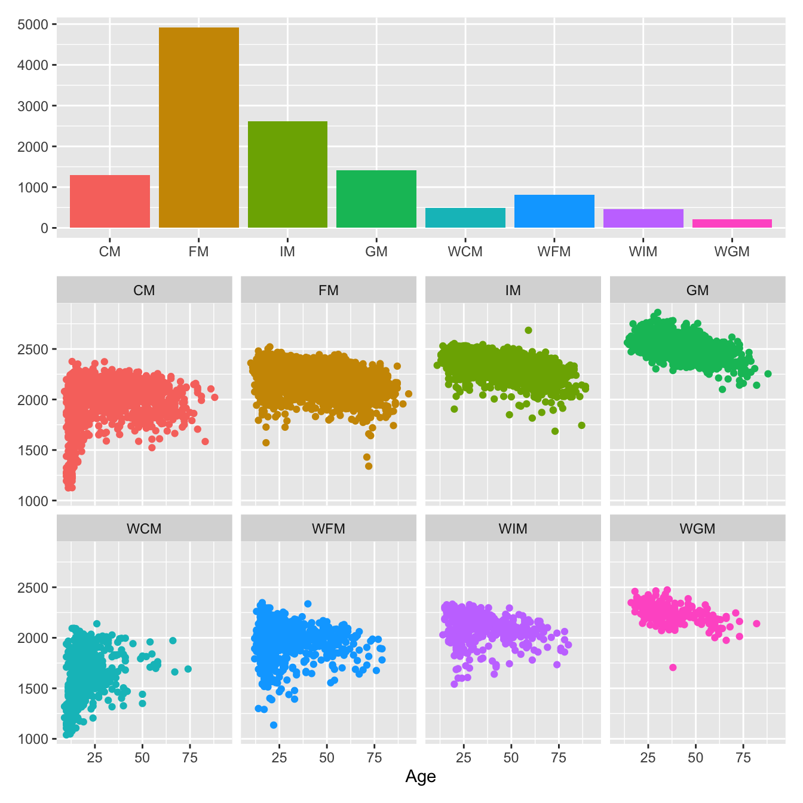
Figure 8.23: Numbers of active titled players and their ratings by age
There are more players in each of the open categories than in any of the female categories, although the qualification levels for those are lower. This is another effect of far fewer women playing than men. There are more FIDE masters (FMs) than any other title.
The point clouds rise as the title level rises, but there is quite a lot of overlap between titles. The highest ratings for each title drop with age, partly because players gain a higher title, partly because players’ performance tends to decline with age. The levels for open titles are higher than the levels for women for each title. Some very young players with low ratings qualified as candidate masters. There are a few low outliers, presumably players who have lost form badly for one reason or another. There is a single upper outlier in the IM category, Igors Rausis, who admitted cheating and lost his grandmaster title in December 2019. As he immediately retired, he should be counted as inactive, but remained classified as active for a year under the special 2020 pandemic rule.
Answers Ratings have a skew distribution. More younger players have ratings than older players. Far fewer women play chess than men. Russia has the most grandmasters, while Spain and France had the most active rated players in 2020.
Further questions How do the ratings of individual players develop over time? How have numbers of active players by country changed over time? FIDE now publishes ratings for Rapid and Blitz chess as well as the so-called Standard ratings considered in this chapter are Standard ratings. How do the three types of rating compare for the players?
Graphical takeaways
- Boxplots are good for extreme outliers in large populations. (Figures 8.2, 8.6 and 8.19)
- Density estimates are effective for comparing distributions. (Figures 8.4, 8.5, 8.14 and 8.15)
- Line widths proportional to group sizes work well when the sizes are very different. (Figures 8.7 and 8.9)
- Smooths summarise scatterplot relationships in large datasets. (Figures 8.22 and 8.21)